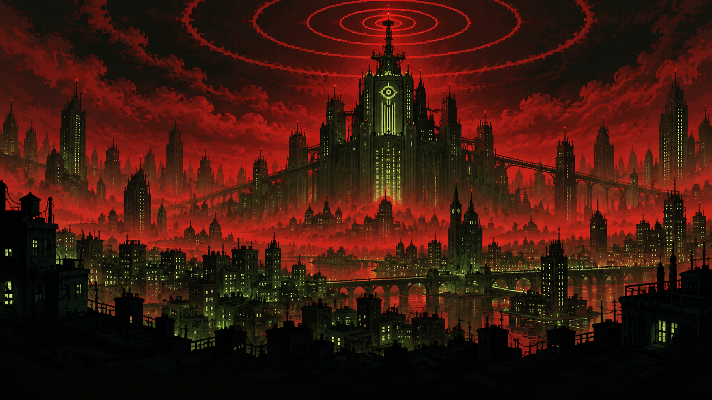
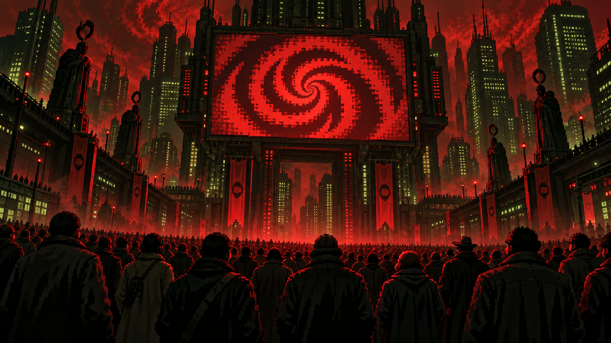

谎
谎言公司
本局传闻
从月球上，能用肉眼看见长城。
声音
结案战报
侦探排行
证据档案
游戏介绍
怎么玩
重开
相信真相
0.0
%
听过真相
0
%
支持率达到
99%
即可获胜
相信谎言
观望中
相信真相
调查现场
等待出发
收起
当前情况
⌖
➜
准备开始
自由行动
回到最新 ↓
谎言公司
游戏介绍 ↗
谎言公司靠传闻统治世界。
侦探，该你出场了！
循着线索找证据，把世界夺回来。
天呐，他们居然相信：
‹
›
从哪里开始调查？
声音
从欧洲开始
出发，拯救世界
→
谎言公司
跳过开场 ↗


01
02
03
暂停播放
下一页
→
Ⅱ
2077.04.01 · 00时
声音
战局已暂停
支持核查
0%
内容触达
0%
行动点
0
金币
0
继续行动
▶
Ⅱ 战局已暂停
×
调查报告
证据 01
实锤
01 / 01
实锤已公布
声音
×
背景音乐
48%
交互音效
70%
全部静音
谎言公司 ／ 结案档案
侦探排行
×
本次名次
—
侦探名称
保存名字
消耗时间
—
TOP 100
消耗时间 ↑
重新加载
排行
侦探名称
调查的观点
消耗时间 ↑
调查报告
谎言公司 ／ 尾声
查看战报 ↗
01 / 02
暂停播放
继续
→